Dónde está el temario, cómo se hacen los tests, qué es eso de «Catedria te
propone» y cómo se lleva todo en el móvil.
Manual del alumnado · septiembre de 2026
Se lee en diez minutos. Puedes empezar por el apartado que necesites.
Qué hay aquí
Índice
Este manual es de la plataforma, no de tu oposición. Lo que veas dentro
—qué temas hay abiertos, qué has contratado— lo decide tu academia.
Entrar la primera vez3
Tu pantalla de inicio4
Estudiar el temario5
Llevarte los temas sin cobertura6
Hacer un test7
La corrección: la parte importante8
Simulacros y exámenes9
Tareas que corrige tu profesor10
Preguntarle a Catedria IA11
Calendario, muro y mensajes12
Instalarlo en el móvil13
Tu perfil y tu contraseña14
Problemas frecuentes15
Un consejo antes de empezar: haz un test el primer día, aunque no hayas
estudiado nada. Hasta que no hagas uno, el sistema no sabe por dónde vas
y no puede proponerte nada con criterio.
El primer día
Entrar por primera vez
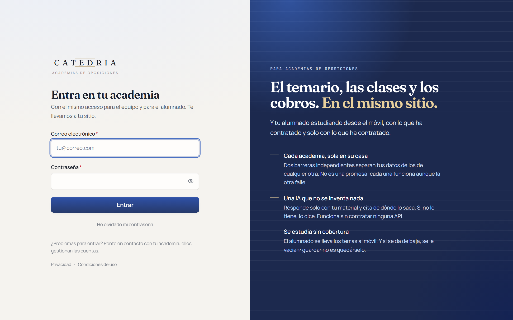
La pantalla de acceso. La dirección te la da tu academia.
1
Tu correo es tu usuario
El mismo que le diste a la academia al matricularte. Si no te llega
ningún correo, mira en la carpeta de correo no deseado antes de llamar.
2
Cambia la contraseña el primer día
Si te han dado una contraseña provisional, cámbiala desde
Perfil. Y usa una que no uses en ningún otro
sitio.
3
Si la olvidas, te la cambias tú
Con «He olvidado mi contraseña» te llega un enlace al correo. Caduca en
una hora y sirve una sola vez. Nadie de tu academia puede ver tu
contraseña, así que no se la pidas: no la tienen.
Sobre compartir la cuenta. Tu academia puede limitar
desde cuántos dispositivos se entra con la misma cuenta. Si prestas tus
datos, lo más probable es que acabes siendo tú quien se quede fuera en mitad
de un simulacro.
¿Y si no veo algo que creo que debería ver?
Puede ser por dos motivos, y los dos son normales: o tu academia todavía no
ha abierto ese tema, o esa parte no entra en lo que has contratado. En
cualquiera de los dos casos, la que lo resuelve es tu academia.
La portada
Tu pantalla de inicio
Lo primero que ves cada día: qué te toca, cómo vas y cuándo es tu próxima
clase.
Arriba, los accesos rápidos. Debajo, la propuesta del día y tu
progreso.
«Catedria te propone»
Es una sugerencia de por dónde seguir hoy, y siempre viene con el
motivo. No te dirá «estudia el tema 4» sin más: te dirá que llevas
doce fallos de veinte en ese tema, o que hace nueve días que no abres nada.
No es obligatorio hacerle caso. Pero si no sabes por dónde empezar un
martes por la tarde, ahí está la respuesta sin tener que pensarla.
Tu progreso
Cuántos temas llevas de los que tienes abiertos. Se actualiza solo según vas
abriendo material y haciendo tests.
Próxima clase
Si tu academia usa el calendario, aquí sale la siguiente, con su hora y su
aula. Si es una clase online, el botón para entrar aparece cuando llega el
momento.
El temario
Estudiar
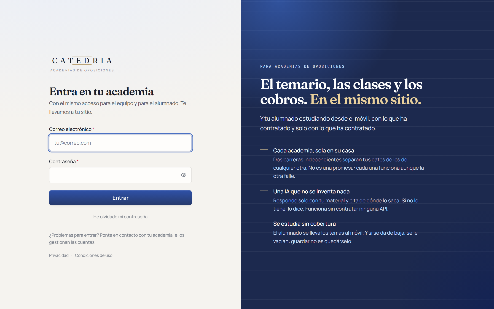
Estudiar · el temario que tienes
abierto, organizado como lo tenga tu academia.
Los temas aparecen según los va abriendo tu profesor. Que no veas el tema 8
no significa que falle nada: significa que la clase todavía no ha llegado
ahí.
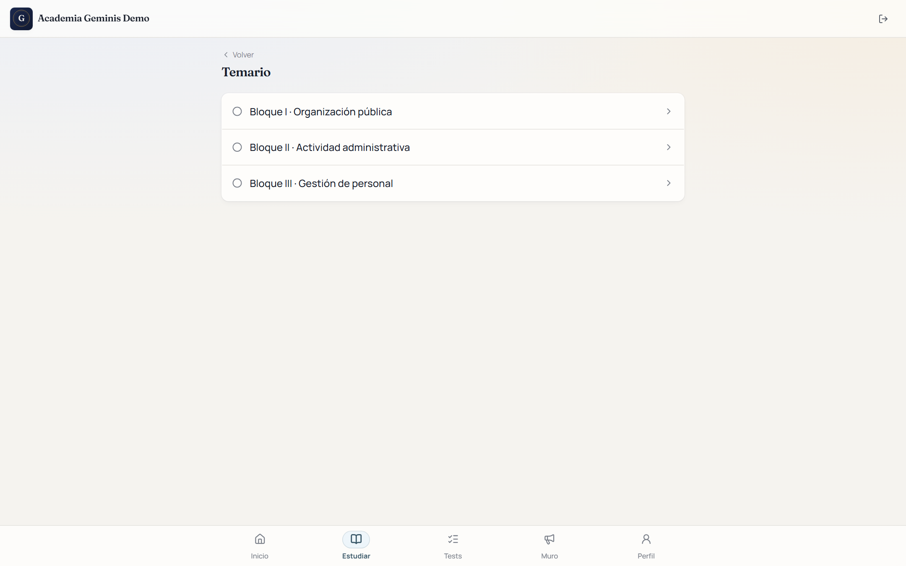
Dentro de un tema: los documentos, y el visor a pantalla
completa.
El visor
A pantalla completa, para leer sin distracciones.
Recuerda por dónde ibas cuando vuelves al mismo documento.
Si tu academia lo permite, se descarga. Si no, se lee en pantalla
y aparece un aviso explicándolo.
Si ves tu nombre marcado sobre el PDF, es una marca de
agua que pone tu academia. Está para desanimar a quien reparta el material
por ahí. Es normal y no es un fallo.
El metro, el pueblo, el avión
Llevarte los temas sin cobertura
Probablemente sea la función que más vas a usar y la que menos gente
descubre sola.
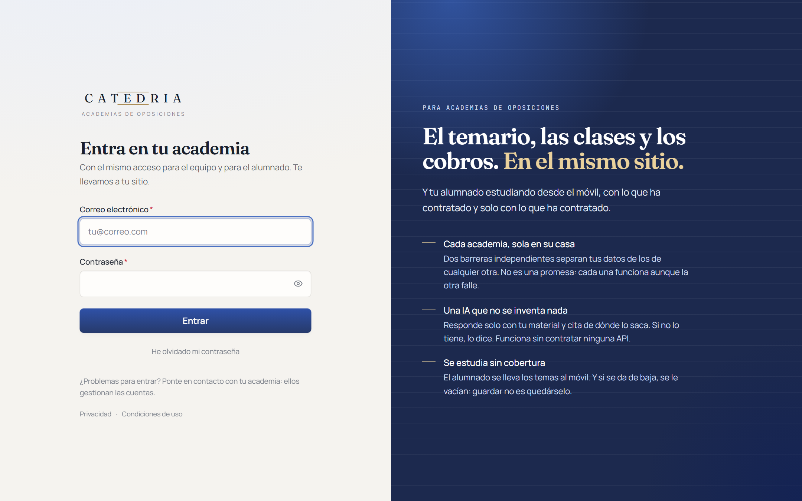
Descargas · lo que has guardado para
leer sin conexión.
1
Antes de salir de casa, con wifi
Entra en el tema que quieras y guárdalo para leer sin conexión.
2
En el metro, abres la app y ya está
El material guardado se abre igual, sin cobertura y sin gastar datos.
3
Cuando vuelvas a tener conexión, se pone al día
Si tu profesor ha subido una versión corregida del tema, se actualiza
sola la próxima vez que entres con datos.
Cuarenta minutos de metro al día son veinte horas al mes. Es la diferencia
entre llegar al examen habiendo dado dos vueltas al temario o una.
Ocupa espacio en el teléfono. Si vas justo de memoria, borra los temas
que ya te sepas: se vuelven a descargar cuando quieras.
Practicar
Hacer un test
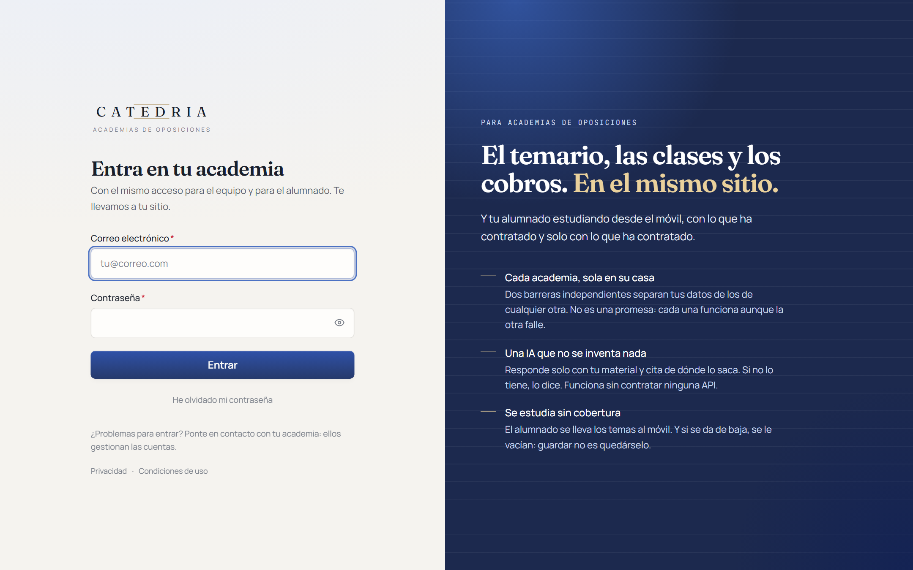
Tests · las cuatro formas de
practicar.
Cuál elegir
Test por tema. Cuando acabas de estudiar algo y quieres ver si
se te ha quedado.
Test aleatorio. De todo lo que tienes abierto. Es el que más se
parece al examen, y el que más incomoda.
Test de mis errores. Solo lo que has fallado antes. Se llena
solo según practicas.
Simulacro. Con reloj y penalización. Ver la página 9.
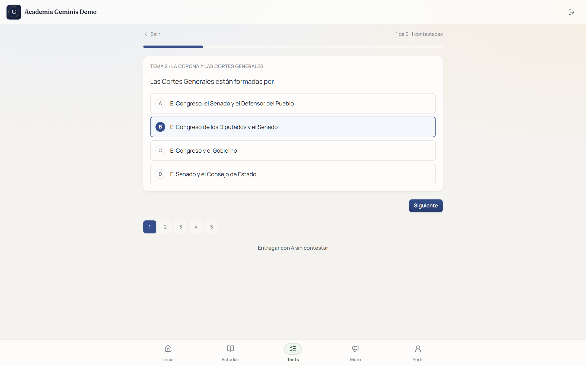
Una pregunta cada vez. Abajo puedes saltar a cualquier pregunta
del test.
Puedes dejarlo a medias. Si cierras la app en mitad de
un test, lo que llevabas contestado se queda guardado y puedes seguir
después. Solo cuenta cuando le das a entregar.
Donde de verdad se aprende
La corrección
Mucha gente mira la nota y cierra. Es un error: la nota no enseña nada, y
los dos minutos siguientes son los que más valen de toda la sesión.
En verde la correcta, en rojo la que marcaste, y debajo la
explicación de tu preparador.
«¿Por qué he fallado?»
En cada pregunta fallada hay un botón. Te explica el fallo apoyándose en
el temario de tu academia, y te dice de qué documento y de
qué página lo saca, para que puedas ir a mirarlo.
El momento en que más se aprende es justo después de equivocarse. Es
también el momento en que no tienes a nadie delante para preguntarle.
Lo que pasa después, sin que hagas nada
Las preguntas falladas van al test de mis errores.
El sistema calcula cuándo estás a punto de olvidar cada una y te
la devuelve justo antes. No tienes que organizar ningún repaso: te llega
hecho.
Tu academia ve en qué temas flojea el grupo, no cuánto fallas tú
en particular para reñirte.
El ensayo general
Simulacros y exámenes
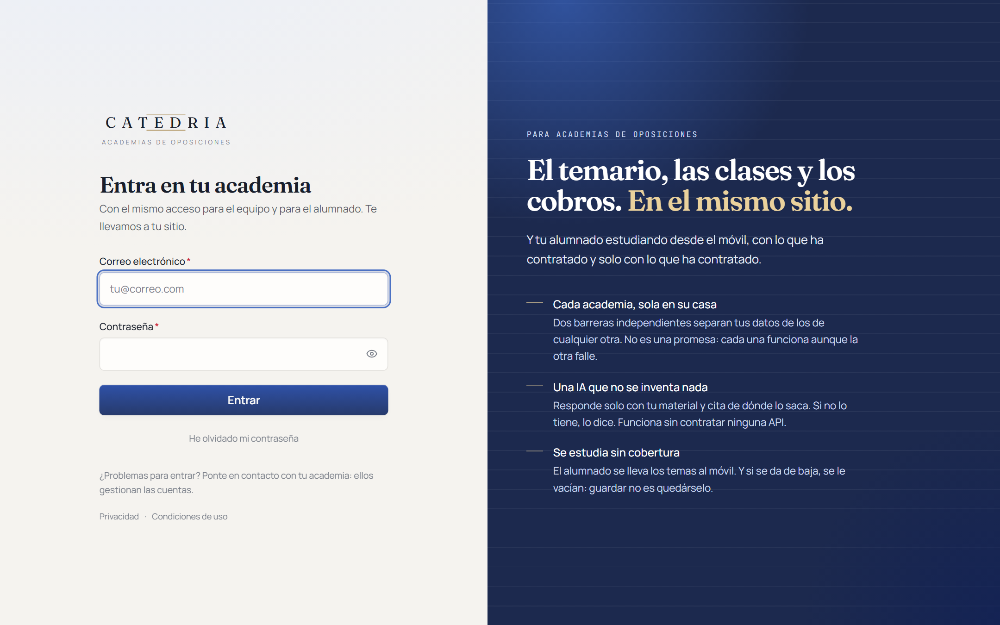
Exámenes · los que tu academia haya
convocado, con su fecha y su hora.
El simulacro
Mismo número de preguntas, mismo tiempo y misma penalización por fallo que
el examen de verdad. Al terminar ves tu nota y en qué percentil
quedas respecto al resto de tu academia.
Una vez empezado, corre el tiempo. Aunque cierres la
aplicación. Hazlo cuando puedas estar una hora sin interrupciones, igual que
harías con el examen.
Los exámenes de desarrollo
Si tu academia usa exámenes escritos, se hacen aquí: se abre a la hora
fijada, hay un reloj a la vista y lo que escribes se guarda
solo cada poco. Si se va la conexión, no pierdes lo escrito.
La penalización, por si nadie te lo ha explicado
En la mayoría de oposiciones cada fallo resta parte de un acierto. Eso hace
que responder al azar sea mala idea, y que dejar en blanco lo que no sabes
sea a menudo la jugada correcta. El simulacro aplica la penalización real,
así que te sirve para practicar también esa decisión.
Lo que corrige una persona
Tareas
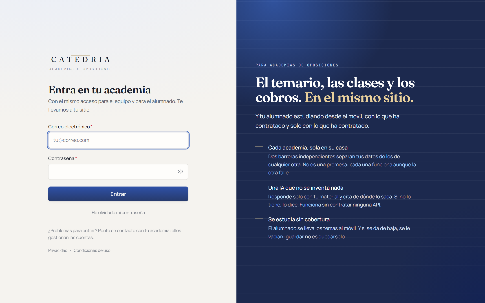
Tareas · supuestos y trabajos, con su
plazo.
Aquí van los supuestos prácticos y los trabajos que corrige tu preparador a
mano. Se entrega escribiendo directamente o subiendo un archivo, según pida
la tarea.
Cuando te la corrigen
Te llega un aviso.
Ves la nota y el comentario de tu preparador.
Si te la devuelven para rehacerla, no pierdes lo que habías
escrito: se queda la versión anterior y añades encima.
Entrega aunque no te dé tiempo a terminar. Una entrega a
medias se puede corregir y se puede rehacer. Una no entregada no.
El tipo test dice si te sabes el temario. El supuesto dice si sabes
aplicarlo. En casi todas las oposiciones, lo segundo es lo que separa el
aprobado de la plaza.
El asistente
Preguntarle a Catedria IA
Catedria IA · responde y cita de dónde
saca cada cosa.
Es un asistente que solo lee el temario de tu academia. No
busca en internet ni contesta de memoria: si la respuesta no está en tu
material, te dice que no la encuentra.
Por qué eso es bueno para ti
Porque lo que te conteste es lo que va a corregir tu preparador. Un
asistente general te daría la ley de otra comunidad autónoma, o una versión
del artículo que ya se ha reformado, y en un examen eso es un fallo.
Fíjate siempre en las fuentes
Debajo de cada respuesta aparece de qué documento y de qué fragmento sale.
Ábrelo. No porque el asistente se equivoque a menudo, sino
porque leer el párrafo original es lo que te lo fija en la memoria.
Cómo preguntarle bien
Concreto antes que general. «¿Qué plazo hay para el recurso de
alzada?» funciona mejor que «háblame del recurso de alzada».
Pídele que te pregunte. «Hazme cinco preguntas del tema 3» es una
forma rápida de repasar.
Pídele que te lo simplifique. «Explícamelo como si no supiera
nada de derecho administrativo».
Si te dice que no encuentra algo que tú sabes que está
en el temario, avisa a tu academia: puede que ese documento aún no esté
indexado. Es información útil para ellos.
El resto
Calendario, muro y mensajes
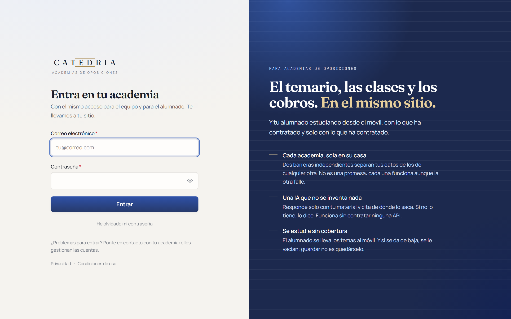
Calendario
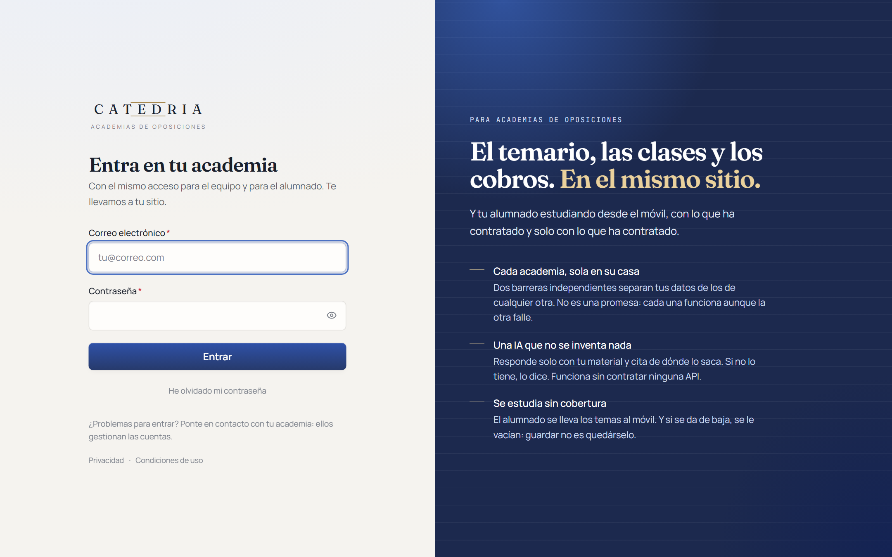
Muro
Calendario
Tus clases, los plazos de las tareas y las fechas de los exámenes. Si la
clase es online, el botón para entrar sale a la hora.
Muro
El tablón de tu clase. Ahí escribe tu profesor los avisos, y podéis
comentar entre vosotros. Es el sitio donde preguntar lo que probablemente le
pase a más gente.
Mensajes
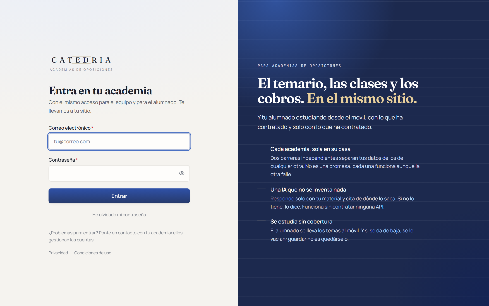
Mensajes · conversación privada con tu
academia.
Para lo que es solo tuyo: una duda personal, un problema con el pago, un
justificante. Queda escrito y no se pierde en un grupo de WhatsApp.
Donde de verdad se estudia
Instalarlo en el móvil
No está en ninguna tienda de aplicaciones, y no hace falta. Se instala desde
el navegador en veinte segundos.
En un iPhone o iPad
1
Abre tu campus en Safari. Con Chrome no aparece la
opción.
2
Pulsa el botón de compartir, el cuadrado con la flecha hacia arriba.
3
Baja y elige «Añadir a pantalla de inicio».
En Android
1
Abre tu campus en Chrome.
2
Menú de los tres puntos, arriba a la derecha.
3
«Instalar aplicación» o «Añadir a pantalla de inicio».
Instalado se abre a pantalla completa, sin la barra del navegador, y
funciona sin conexión con lo que hayas descargado. Merece la pena hacerlo
el primer día.
Tu cuenta
Perfil y contraseña
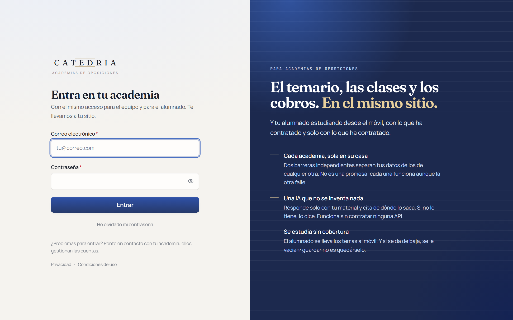
Perfil · tus datos, tu contraseña y
tus dispositivos.
Lo que puedes hacer aquí
Cambiar tu contraseña.
Ver tus dispositivos y cerrar la sesión de uno que ya no uses.
Revisar tus datos de contacto. Si el correo está mal, no te
llegarán los avisos.
Cerrar sesión en un ordenador prestado
Si has entrado desde el ordenador de una biblioteca o de un amigo,
cierra sesión al terminar. Al hacerlo se borra también el
material que se hubiera guardado en ese equipo.
Tu academia no puede ver tu contraseña. No existe en
ningún sitio de forma legible, ni siquiera para quien administra el sistema.
Si alguien te la pide por teléfono o por correo, desconfía.
Tus datos
Tienes derecho a pedir una copia de tus datos y a que se corrijan si están
mal. Se pide a tu academia, que es quien los tiene. La política de privacidad
completa está enlazada al pie de cualquier pantalla.
Antes de llamar
Problemas frecuentes
No veo un tema que sé que existe
Tu profesor todavía no lo ha abierto, o no entra en lo que has contratado.
Pregunta en clase o por mensaje; no es un fallo de la aplicación.
No me llega el correo para cambiar la contraseña
Mira en correo no deseado. Si tampoco está, comprueba con tu academia que
tienen bien tu dirección: el enlace se manda a la que ellos tengan.
Me dice que he alcanzado el límite de dispositivos
Entra en Perfil y cierra la sesión de un
dispositivo que ya no uses. Si sigue sin dejarte, habla con tu academia.
Se me ha cerrado el test a la mitad
Vuelve a Tests: el intento sigue ahí con lo que
llevabas contestado. Solo cuenta cuando entregas.
El PDF no se descarga
Tu academia ha decidido que ese material se lea en pantalla. Es una
decisión suya y no se puede cambiar desde aquí.
La IA me dice que no encuentra algo del temario
Avísale a tu academia. Puede que ese documento todavía no esté indexado, y
saberlo les sirve.
Se ve mal en mi móvil
Actualiza el navegador. Si lo tienes instalado como aplicación, ciérrala
del todo y vuelve a abrirla para que coja la última versión.
He entrado y no aparece nada de mi oposición
Lo más habitual es que la matrícula todavía no esté activada. Lo arregla tu
academia en un minuto.
Para cualquier otra cosa, escribe a tu academia desde
Mensajes. Este manual describe la plataforma; lo
que se ve dentro de ella lo decide siempre tu academia.